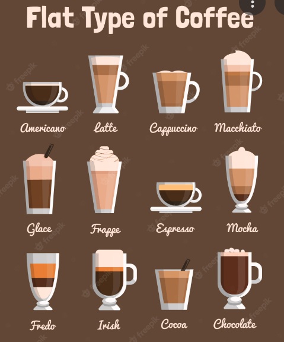

Espresso o Café expreso
Esta preparación de origen italiano se obtiene con una cafetera espresso. Se sirve poca cantidad de café (unos 30 ml) en una taza pequeña con una característica capa de crema en la superficie debido a la presión. Este café tiene un aroma y sabor intenso.
Café cortado, macchiato o noisette
Se trata de un café expreso al que se le añade un poco de leche caliente o espuma de leche.
Café escocés
Se prepara igual que el café irlandés, pero sustituyendo la nata por helado de vainilla.
Café frappé
Se trata de café soluble batido al que se le añade leche y se sirve muy frío. Esta bebida es muy popular en Grecia y Chipre, sobre todo durante el verano.

Cappucino o capuchino
Es un café expreso al que se le añade leche con espuma, y se puede decorar. la leche y la espuma de leche a partes iguales, es decir, 1/3 de la taza para cada uno. En Italia se consume principalmente como desayuno.
Café con leche, Café latte o Café au lait
Es un café expreso al que se le añade leche caliente, siendo las proporciones de 1/3 de café y 2/3 de leche, aunque pueden variar en función del país.
Latte macchiato o leche manchada
Es una taza de leche caliente a la que se le añade una pequeña cantidad de café expreso, al contrario que el café macchiato. El café se debe echar sobre la leche. Se suele servir en una taza alta de cristal.
Café americano
Es un café expreso al que se le añade agua caliente y azúcar, obteniendo así un café más suave. Esta bebida es muy popular en Venezuela.
Café moka o Mokaccino
Es un café expresso con chocolate y leche a partes iguales (1/3 de cada uno). Tiene una capa de espuma en la superficie, sobre la que se espolvorea canela o cacao.
Café vienés
Es una taza de café expreso largo al que se le añade leche caliente con crema y se adorna con chocolate rallado.
Café irlandés o Irish coffee
En una copa se echa whisky irlandés, se añade azúcar y café fuerte y caliente hasta 2 centímetros por debajo del borde. Se remueve bien y se agrega muy despacio nata fría poco batida, que debe quedar flotando en el café. Se bebe sin remover más.
Café gaélico
En una copa se echa whisky escocés previamente calentado y se añade café caliente. A continuación, se agrega azúcar y nata montada, sobre la que se espolvorea chocolate rallado.